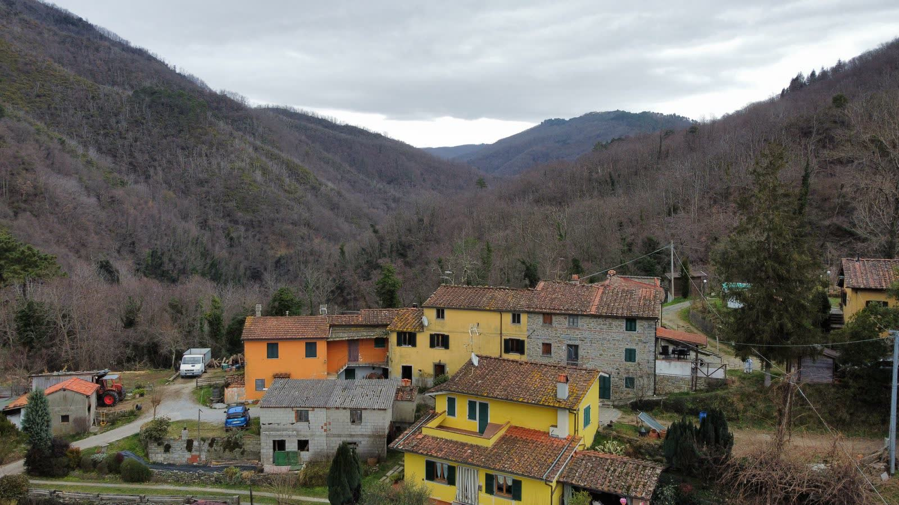

Liberi nel bosco,
custodi di una tradizione.
Non siamo commercianti. Siamo i figli di queste terre che hanno scelto la fatica del silenzio al rumore delle città.

Giacomo e Giulio
La nostra storia non nasce da un business plan, ma da un rifiuto. Il rifiuto delle logiche industriali che trasformano il bosco in una catena di montaggio. Quando abbiamo preso in mano i castagneti di famiglia, molti ci hanno dato dei folli.
"Abbiamo imparato che la terra non ti aspetta. Se il trattorino si rompe a mezzanotte sotto la pioggia, lo ripari lì, con le mani sporche e il fiato corto, perché domani è tempo di raccolta."

La nostra è una fatica estrema. È il lavoro fino a quando il buio non inghiotte gli alberi e restano solo le torce a guidare le mani. Non cerchiamo scorciatoie: ogni castagna che mangiate è passata attraverso i nostri calli.
Purezza nei fatti,
non nelle etichette.
Non siamo «Naturale» perché non vogliamo inseguire una certificazione commerciale: siamo Naturali. Le certificazioni spesso sono solo burocrazia che si paga. La nostra garanzia è il fango sui nostri stivali e la salute dei nostri alberi secolari.
Senza Chimica
Lasciamo che il bosco faccia il bosco. Nessun pesticida, solo equilibrio naturale.
Raccolta Manuale
Ogni riccio è aperto a mano o con strumenti tradizionali. Rispetto per il frutto.
Trasparenza
Chiunque voglia vedere come lavoriamo è il benvenuto nel nostro bosco.

Il picco della raccolta
"Un albero felice fa frutti onesti."